恋爱系统bug
我在约会游戏里
搞出了独角兽
凌晨3:15。
屏幕上的DAU曲线像心电图一样无力地抖了一下，然后继续往下掉。
"DAU又掉了3%……这破游戏，连我自己都不想玩。"
我揉了揉发酸的眼睛，盯着《心动指数》的后台数据。这是我们公司第三款恋爱游戏了，留存率惨不忍睹。桌上的外卖盒已经凉透了，咖啡杯里只剩残渣。
"这游戏需要真人体验测试，谁愿意——"
话没说完，屏幕猛地闪出白光。
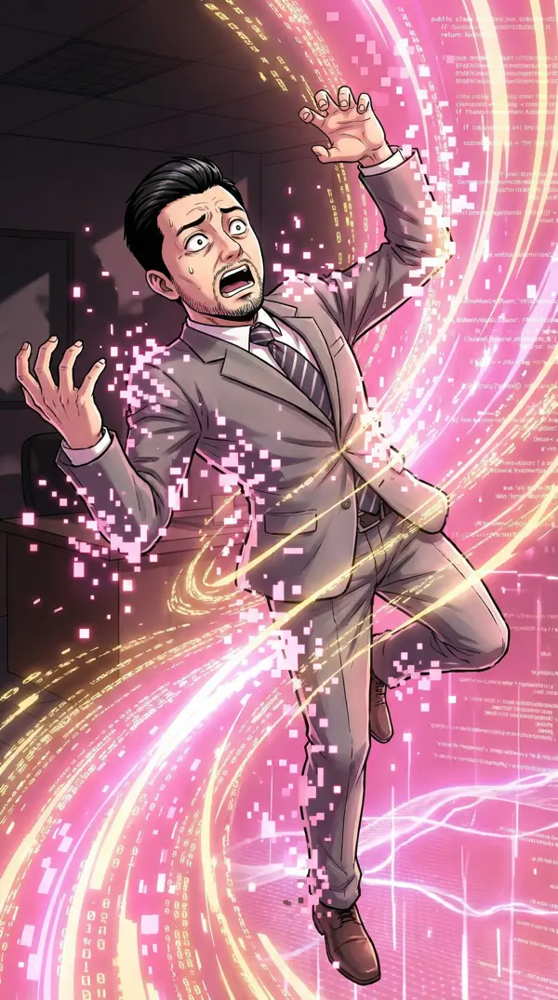
我感觉自己在坠落。
身体在解构，像被万亿个粉色像素点拆开又重组。耳边响起一个甜到发腻的女声：
"等等——这不是VR测试界面！我的身体怎么——"
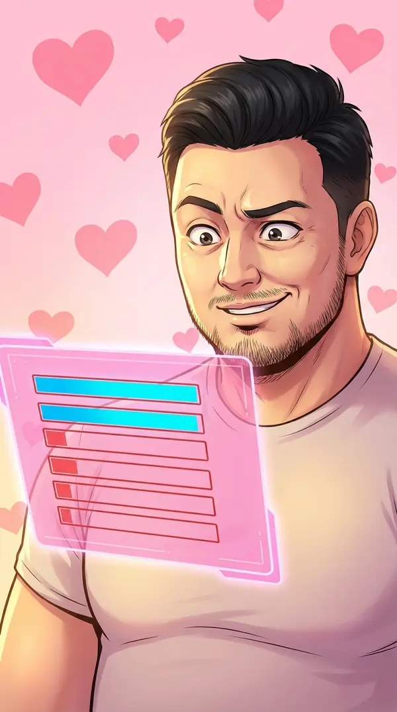
"撩力为零……这个属性居然能为零？"
系统加载完毕。
我站在一条阳光明媚的商业步行街上。两边是精致的小店，空气里飘着咖啡香。路上的NPC成双成对地散步，甜得像往空气里撒了糖。
低头看自己——蓝白格子衬衫，卡其裤。比办公室那件皱巴巴的POLO好看了一点。
"……这做得挺像样的。日活300的游戏竟然有这场景精度？"
职业病犯了。先评估一下这个世界的商业生态……
推开「小夏の咖啡」的门。门铃叮了一声。
一个齐肩短发的姑娘从吧台后面抬头，笑容像刚倒出来的拿铁——温暖、自然、不加糖。
林小夏："欢迎光临~想喝点什么？今天有新到的埃塞俄比亚水洗豆，要试试吗？"
"这家店面积大概40平，租金估计……等等，我在想什么？"
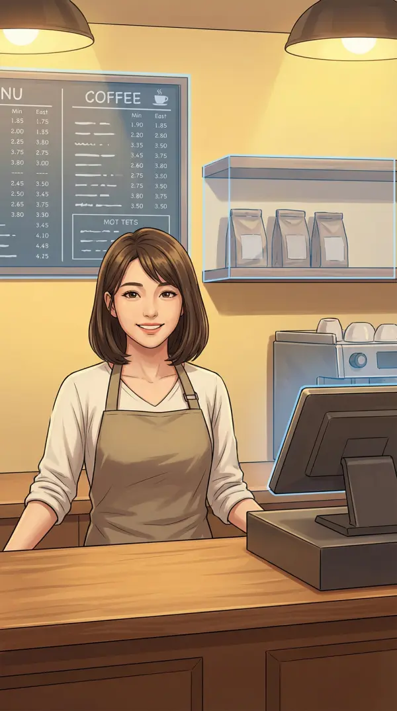
我没有看菜单。我看的是她的经营模式。
视线扫过她身后：墙上的价目表、角落只剩三袋的咖啡豆库存架、门口的客流计数器——今日来客：7人。
"日均客流7人，客单价大约28元，月营收不到6000……这个位置的租金起码8000。她在亏钱。"
我开口了。但说的不是她期待的话。
我："你的水洗豆定价偏高了3块，考虑到这个地段的消费水平。另外你的库存周转率有问题——后面只剩三袋豆子，但菜单有12种单品，意味着至少40%的SKU是虚设。你需要做品类瘦身。"
林小夏的微笑慢慢凝固。
林小夏："……你是来喝咖啡的？还是来做尽调的？"
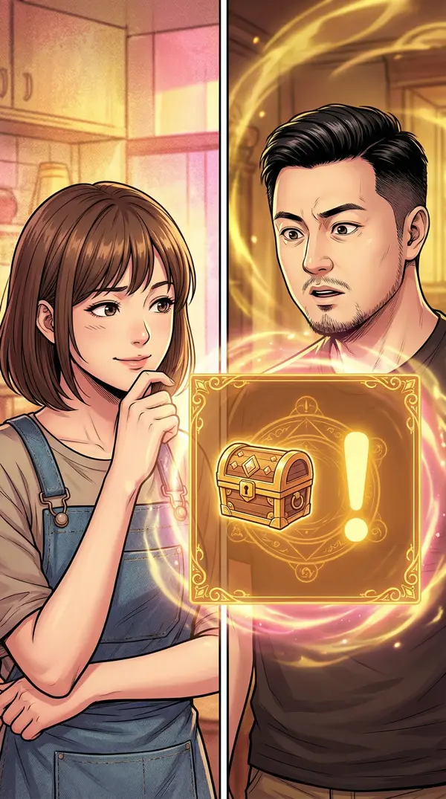
好感度在跌。但我的商业洞察属性在疯狂闪烁——
「小夏の咖啡」濒临破产
（剩余运营资金：17天）
任务目标：拯救咖啡店
奖励：经验值×500 + ???
商业洞察提示：
▸ 距离大学城步行仅5分钟
▸ 学生市场完全未开发
▸ 改造成「自习+咖啡」模式……
"有意思。这个游戏的底层经济模型比我想象的复杂。如果能救活这家店……经验值×500，够升两级了。"
"谁说升级一定要靠谈恋爱？"
我坐下来，点了一杯最便宜的美式（12元），开始在餐巾纸上画商业模型。
"大学城5分钟步行圈，周边3000名学生，期末考试季马上到。如果把这里改成'自习咖啡馆'——固定座位月卡制+平价续杯，翻台率能提高400%。"
我抬头。但不是要夸咖啡。
我："你的店还能撑多久？"
林小夏的笑容消失了。
林小夏："……你怎么知道？"
我："库存只剩三袋豆子，但你没有补货。冰箱里的牛奶日期偏近。门口计数器今天才7个人。这些加在一起——大概还有两周？"
她沉默了几秒。
林小夏："十七天。你是第一个看出来的人。"
我把餐巾纸推给她。上面画着完整的商业改造方案——「自习咖啡馆」模式、定价策略、引流渠道。虽然画在餐巾纸上，但逻辑清晰。
我："自习咖啡馆。月卡99元无限续杯，固定座位有插座有WiFi。期末季学生抢都来不及。"
林小夏："你认真的？我们才认识十分钟。"
我："商业机会不等人。而且——"
我瞥了一眼系统面板。
我："——我需要经验值。"
林小夏问："你想要什么回报？"
林小夏听完后，第一次真正笑了——不是礼貌式的，而是觉得好笑的那种。
林小夏："你是我见过最奇怪的客人。来喝咖啡的，结果要改造我的店，还不要钱，只要……数据？"
我："数据比钱值钱。"
改造开始。
我在黑板上写下新的定价——「自习套餐：月卡99/学期卡249」。林小夏站在旁边看，表情从怀疑一点一点变成认真。
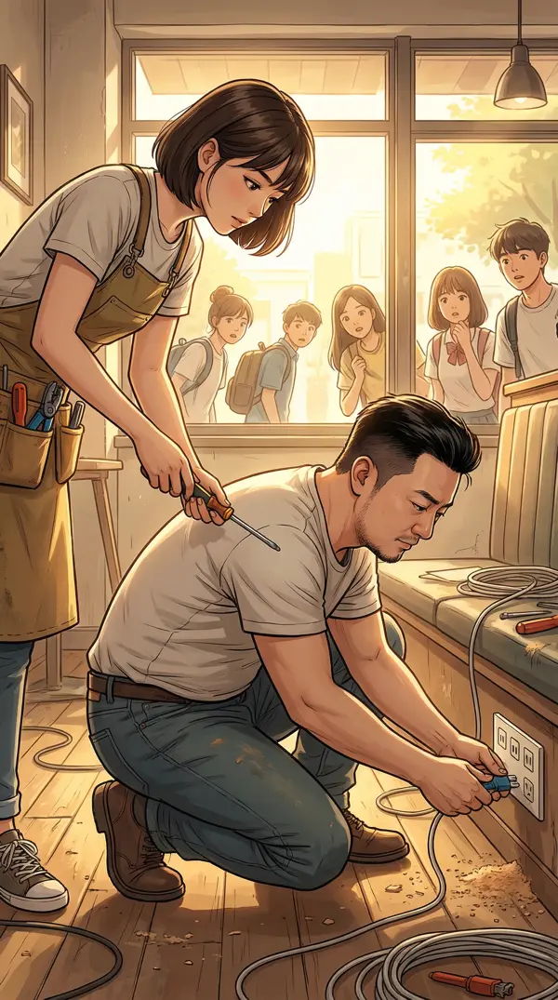
我蹲在地上接线排，给每个座位加装USB插座。林小夏递工具。窗外，大学城的学生路过时好奇地往里张望。
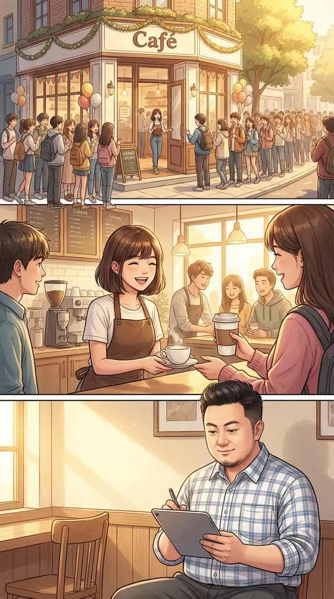
开业第一天。门口排队的学生绕了半条街。
林小夏在忙碌中回头看了我一眼。我在角落用平板记录数据，嘴角微微上扬。
「小夏の咖啡」日营收：
改造前 ≈ ¥196/天
改造后 ≈ ¥2,340/天 (+1094%)
经验值获得：+500
当前等级：Lv3（←升级！）
新能力解锁中……
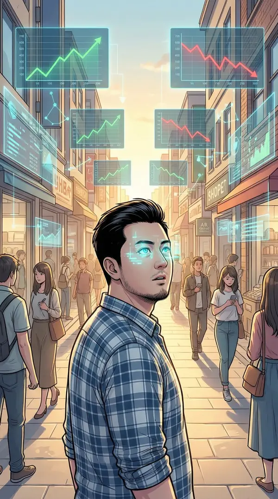
Lv3解锁新能力——「市场预判」。
我站在步行街中央，眼前的世界突然叠加了一层数据。每家店铺头顶浮现半透明的趋势曲线——有的在上升，有的在急跌。
"这个世界的经济系统比我想象的更精密。每家店都有自己的生命周期……如果我能在趋势拐点之前介入——"
"谁说这不是在'谈恋爱'？我在和这个世界的经济系统谈恋爱。"
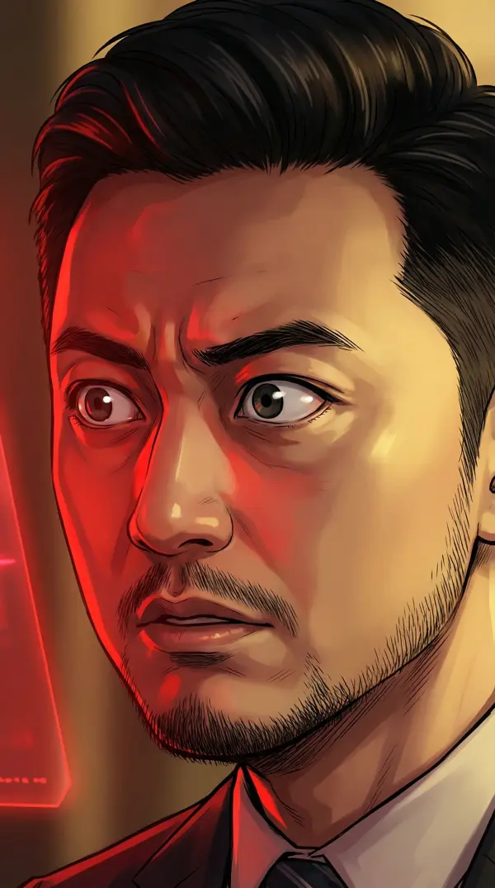
突然——一个系统警告弹出。不是粉色的恋爱提示，而是红色的。
「月光花坊」经营数据异常
营收曲线呈非自然增长模式
疑似外部资金注入
关联人物：苏一鸣
身份：表层 = 花店老板/约会达人
深层 = ？？？（权限不足）
"有人在这个游戏里做假账？在一个恋爱游戏里？"
镜头切到街对面。
苏一鸣站在「月光花坊」门口——白衬衫挽袖，完美的笑容，正在递花给一个女性NPC。约会达人模板。
但我的「市场预判」能力让我看到了别人看不到的东西——他背后有一串不正常的红色资金流向线，穿过建筑物向远处延伸。
"一个约会游戏里的NPC……在做跨世界的资金转移？"
晚上。咖啡店打烊后。
我坐在吧台前分析数据。林小夏在擦桌子。气氛安静但舒服。
林小夏："你真的不是来玩游戏的吧？正常玩家这会儿都在约会。"
我："约会的ROI太低了。花两小时好感度+20，还不如帮一家店做改造经验值+500。"
林小夏："你把所有事情都换算成数字吗？"
我："……大部分。"
她停下擦桌子的手。
林小夏（小声）："那你怎么换算'帮一个快破产的人'？"
安静被打破——苏一鸣推门走了进来。手里拿着一束花。
苏一鸣："小夏，这是今天花坊新到的洋桔梗，想到你就送过来了。"
林小夏（客气但疏远）："谢谢，但我不太需要……"
苏一鸣注意到了我。
苏一鸣："这位是？"
我看着苏一鸣背后隐约浮现的红色数据流线。在温暖的咖啡店灯光下，那些异常数据像血管一样跳动。
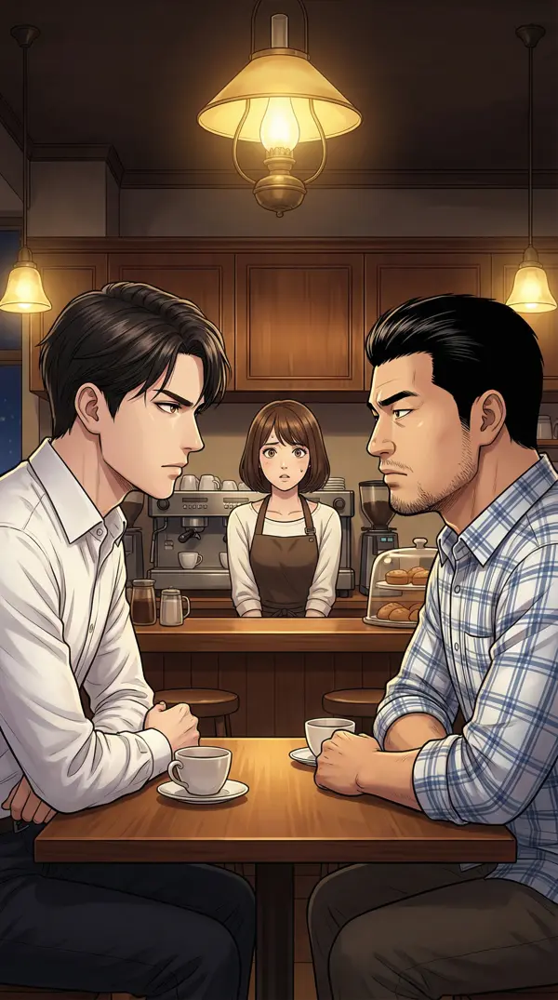
苏一鸣坐下来，优雅地点了一杯拿铁。但他看我的眼神——不像在看一个情敌，更像在评估一个变量。
苏一鸣："听说你帮小夏改造了咖啡店？商业才能不错。在这个游戏里做生意的人不多。"
我："在这个游戏里做跨世界资金转移的人也不多。"
空气凝固了三秒。
苏一鸣（微笑不变）："……你的商业洞察属性很高啊。"
林小夏（困惑）："你们在说什么？"
苏一鸣站起来，放下咖啡钱。走到门口时回头：
苏一鸣："这个游戏的规则比你想象的复杂。好感度只是表层数据。真正的游戏……在经济系统的底层。"
然后他压低声音，只有我听得到：
苏一鸣（低声）："你改造咖啡店的那套——很像现实世界的某个人。朱……什么来着？"
我的瞳孔猛地收缩。
"他知道我是谁。他知道这是游戏。他……也是穿越者？"
苏一鸣似乎知道你的真实身份。下一步？
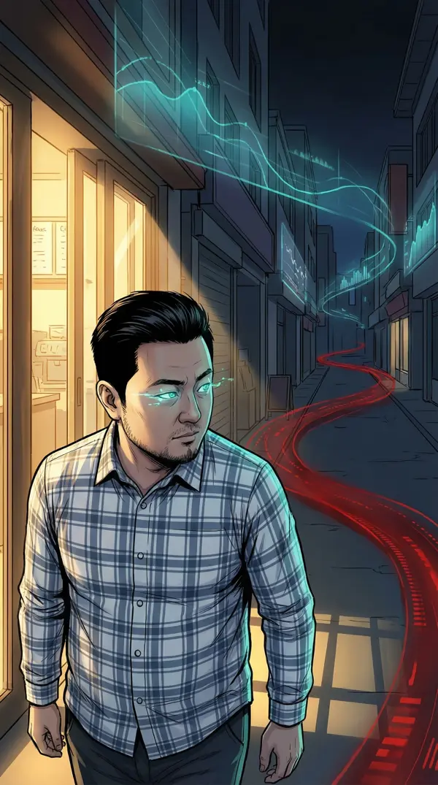
苏一鸣离开后。我假装平静地喝完咖啡，和林小夏道别。
走出店门的那一刻——激活「市场预判」。
整条步行街叠加上了数据层。大部分商铺的趋势线是正常的蓝绿色。但苏一鸣的花坊方向——一条粗大的红色数据流，穿过地面向远处延伸。
"好感度只是表层数据……经济系统的底层……他在说这个游戏有两套系统？"
我沿着红色数据流追踪。它穿过商业区，穿过住宅区，一直延伸到——
地图的边缘。
眼前是一片虚无。像素在解体和重组。红色数据流穿过这堵看不见的墙，消失在"外面"。
"这些数据……在流向游戏外部。有人在用这个恋爱游戏的经济系统……从现实世界洗钱？"
▸ 警告：你正在接近系统边界
▸ 当前权限等级不足
▸ 建议返回主线任务区域
▸ ……但如果你非要看的话
▸ Lv5 解锁「边界穿透」能力
▸ 当前：Lv3 → 距Lv5还需：3,200经验
（非自动生成）
玩家「朱江」：
你发现了不该发现的东西。
苏一鸣不是唯一的。
这个游戏的真正目的
从来就不是恋爱。
如果你想知道真相——
先活过第一个月。
——404
"404……那个系统管理员AI？它在帮我？还是在警告我？"
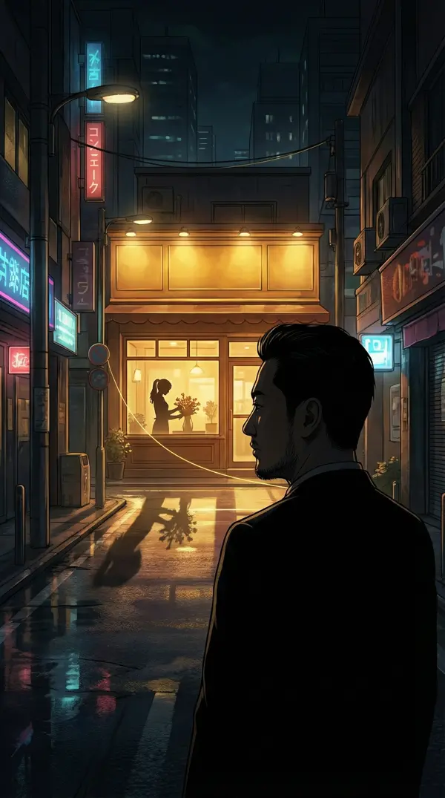
我转身走回商业街。
远处，咖啡店的灯还亮着。林小夏在窗户后面的剪影正在整理花束——苏一鸣送的那束。
而我的「市场预判」在林小夏身上看到了一条之前没注意到的数据线——
不是红色，不是蓝色，而是……金色。
和404发消息的颜色一模一样。
我以为我穿越进了一个恋爱游戏。
我以为最大的挑战是撩力为零。
我以为苏一鸣只是一个花心NPC。
我全都猜错了。
这个游戏里，最危险的人不是他。
是那个笑起来眼睛弯弯的咖啡店老板。